Функции Grok Bot из видео Charlie Chang
Charlie Chang показывает настройку Grok Bot, команду специалистов, подключение Gmail, видимый браузер, расписания, Marketplace и групповой чат. Два законченных примера — подбор саундбаров и ответ на письмо. Ниже отдельно отмечены действия на экране, объяснения автора и возможности из подписей интерфейса.
54 пунктов по разделам видео · 10 описанных сценариев · 26 скриншотов
На 3:33–3:38 и 12:16–12:34 Charlie уточняет: боты используют один общий облачный компьютер, общие файлы, браузер и сохранённые входы, при этом у них есть разные рабочие области. Отдельный экран бота в интерфейсе не подтверждает изоляцию аккаунтов. Автор предлагает ограничивать действия инструкциями, но техническое разграничение доступа в ролике не показывает. На кадре 2:55 подпись обновления также прямо говорит об общем компьютере помощников.
Функции по разделам видео
Создание и организация команды
Показано в интерфейсе · 1:20
- Создавать ботов через плюс и Create new Bot.
- Задавать боту имя, краткую метку роли Label и описание обязанностей.
- Настраивать уведомления о завершении работы бота или необходимости ответа пользователя.
- Выбирать область ответственности из вариантов онбординга или описывать собственную задачу.
- Давать дополнительные инструкции обычными сообщениями в постоянной переписке.
- Переключаться между ботами в списке слева и возвращаться к истории работы каждого.
- Создавать нескольких ботов с разными специализациями: автор создаёт ассистента и исследователя.
Настройки использования и компьютера
Показаны настройки и доступные действия · 2:36
- Проверять процент использованного недельного лимита и срок его сброса.
- Задавать месячный предел дополнительного использования через On-demand monthly limit.
- Переходить к управлению оплатой через Manage Billing.
- Выбирать канал обновлений приложения через Update Track.
- Включать автоматические обновления и запускать проверку обновлений вручную.
- Обновлять общий компьютер ботов. На экране указано, что файлы и сохранённые входы остаются, а установленные приложения и пакеты удаляются; обновление применяется ко всем помощникам.
- Сбрасывать компьютер, если он завис. Подпись предупреждает о восстановлении из последнего сохранённого снимка и возможной потере самых свежих изменений.
Подключение аккаунтов и сервисов
Показано в интерфейсе или объяснено ведущим · 3:03
- Запрашивать подключение сервиса прямо в чате.
- Добавлять несколько аккаунтов Gmail к одному подключению.
- Присваивать добавленному аккаунту метку, например work.
- Использовать карточку сервиса для перехода к авторизации и добавлению аккаунта.
- Подключать инструменты через внешний MCP-сервис. Автор называет Composio и Zapier; сам процесс настройки MCP не показывает.
- Объединять множество инструментов через одно подключение Composio, управляя их подключениями в Composio. Это объяснение автора.
Облачный компьютер и обучение действиям
Показано в интерфейсе · 4:20
- Открывать экран компьютера из правой панели выбранного бота.
- Наблюдать за выполняемыми действиями на рабочем столе.
- Самостоятельно управлять браузером Chrome на компьютере бота.
- Открывать сайты и входить в необходимые аккаунты на этом компьютере.
- Попросить бота выполнить задачу именно на видимом рабочем столе, чтобы наблюдать ход работы.
- Запускать Teach a task и показывать боту свои действия для обучения. В примере видны индикатор записи, таймер и сообщение о наблюдении.
Подбор товаров на Amazon
Показано выполнение и результат · 5:32
- Искать товары по описанию и ограничениям пользователя: в примере три саундбара дешевле 500 долларов с предпочтением Amazon.
- Применять ограничение цены и сортировку выдачи по отзывам: это видно в браузере на кадре 5:55.
- Открывать страницы товаров на своём компьютере.
- Собирать короткий список вариантов с ценами, характеристиками, отзывами и ссылками.
- Прикладывать скриншоты выдачи и карточек товаров к результату.
- Предлагать уточнить выбранный вариант, продолжить поиск или добавить товар в корзину. Это предложение видно в карточке результата; добавление в корзину не выполнено.
Регулярные задачи
Показан запрос и обновление расписания · 7:16
- Задавать регулярные задачи обычным сообщением с указанием времени запуска.
- Выполнять утреннюю проверку Slack и почты и присылать краткий отчёт по вопросам, требующим внимания.
- Показывать список регулярных задач конкретного бота в правой панели.
- Поддерживать несколько расписаний у одного бота, включая ежедневные, еженедельные и по будням.
- Встраивать новый запрос в существующее утреннее расписание, чтобы не присылать два одинаковых уведомления. На экране бот переносит прежний отчёт с 8:48 на 9:00.
- Проверять несколько рабочих пространств Slack: в подтверждении бот указывает три пространства.
Marketplace и готовые боты
Показан каталог и карточка шаблона · 9:37
- Находить ботов и плагины через поиск в Marketplace.
- Открывать карточки готовых ботов и читать описание перед импортом.
- Импортировать готового бота кнопкой Import Bot. Автор показывает кнопку; подтверждённый результат импорта не демонстрируется.
- Просматривать составляющие шаблона: Instructions, Memories, Skills, Routines и Integrations.
- Использовать бота-конструктора для создания других ботов. В карточке dr eggbot заявлено, что он задаёт вопросы о предпочтениях и создаёт ботов через CreateAgent; выполнение этого сценария не показано.
- Подключать приложения через каталог Featured Plugins, включая Gmail, Google Calendar, Google Drive, Notion и Slack.
- Подключать менеджер паролей для входа в сайты: показана карточка 1Password. Само подключение и вход с его помощью не демонстрируются.
Групповой чат и делегирование
Показано создание группы и начало координации · 10:41
- Создавать отдельный групповой чат и добавлять выбранных ботов.
- Давать общую задачу нескольким специалистам: в примере ассистенту, Finance и COO поручено разобраться с неоплаченными счетами.
- Делегировать работу другому боту сообщением: ассистент просит Finance получить открытые счета из QuickBooks.
- Распределять обязанности между ботами: ассистент берёт на себя письма и последующие напоминания, чтобы не обращаться к клиентам повторно.
- Собирать переписку участников в одном видимом диалоге и возвращаться к нему из списка чатов.
Работа с почтой без открытия Gmail
Показано выполнение · 11:38
- Проверять почтовые аккаунты на письма, которым нужен ответ.
- Готовить краткую сводку таких писем прямо в переписке с ассистентом.
- Отправлять ответ на выбранное письмо по инструкции пользователя. В примере бот отправляет Lisa короткую благодарность в существующую цепочку.
- Показывать подтверждение отправки в чате.
Сценарии описанные автором
- Обучение предпочтениям · 2:04–2:28. Автор говорит, что бот со временем узнаёт предпочтения пользователя. Просмотр или редактирование памяти в этом ролике не демонстрируется.
- Покупки и документы · 5:03–5:10. По словам автора, его ассистент ранее оформлял заказы на Amazon, скачивал документы и заполнял их. В текущем примере показан поиск товаров; покупка не выполнена.
- Параллельная работа и координатор · 6:00–6:16. Автор описывает одновременную работу нескольких ботов и рекомендует Chief of Staff для координации специалистов.
- Самостоятельное общение ботов · 6:38–7:15. Автор объясняет, что ассистент может самостоятельно написать исследователю, поручить задачу и получить результат. В этой части показана иллюстрация; видимое делегирование есть позднее в групповом чате.
- Предложения автоматизаций · 8:00–8:14. У бота можно попросить предложить полезные регулярные задачи с учётом жизни и работы пользователя. Пример ответа на такой запрос не показан.
- Финансовый бот · 8:19–8:30. Автор предлагает поручать ему напоминания об оплате счетов, письма клиентам, работу с QuickBooks и подготовку финансовых отчётов.
- Рассылки в Beehiiv · 8:32–8:44. Описаны вход в Beehiiv, подготовка и написание материалов, поиск новостей и статей для рассылки. Интерфейс Beehiiv не показывается.
- Другие специализации · 8:46–8:55. Автор перечисляет помощника рекрутинговой компании, контент-стратега, нескольких исследователей и бота для LinkedIn outreach. Их рабочие процессы подробно не раскрываются.
- Покупка и общение с поддержкой · 9:16–9:36. Автор говорит, что после входа и разрешения бот может купить выбранный товар с доставкой по адресу, а также общаться с сотрудниками поддержки через чат сайта. Оба действия здесь не выполняются.
- Общие диалоговые задачи · 12:36–12:45. Автор упоминает ответы на вопросы, исследования и роли репетитора, наставника и собеседника для психологической поддержки. Последняя роль — формулировка автора; профессиональная пригодность в ролике не проверяется.
Дополнительные функции из меню и подписей
- Роли в онбординге · 1:55–2:15. Варианты включают повседневные операции с календарём, почтой и Slack; работу над отдельным бизнесом; сценарии, посты и рассылки; мониторинг трендов, конкурентов и дайджестов. Возможность писать в стиле пользователя заявлена в подписи, отдельного примера нет.
- Другие готовые боты · 9:45. В каталоге видны Overheard, Tradbot, Projects Manager, Outbound Prospecting и SEO & AEO Desk. Кроме карточки dr eggbot, их возможности не раскрываются.
- Возможности коннекторов · 10:15. В подписях Google Calendar указаны поиск событий и планирование встреч; Google Drive — поиск, чтение, создание и предоставление доступа к файлам; Slack — поиск по каналам и отправка сообщений. Есть Granola для контекста встреч. Эти операции отдельно не выполняются.
- Дополнительные интеграции · 10:25. В каталоге видны Adobe Developer App Builder, Airtable, Asana, Atlassian Forge и коммуникационные сервисы. Наличие карточки означает возможность подключения, а не демонстрацию рабочего сценария.
Что добавляет второй ролик
По сравнению с первым разобранным видео здесь подробнее показаны профиль с меткой и уведомлениями, настройки лимитов и обновлений, Marketplace с импортом шаблонов, 1Password, поиск товаров в видимом браузере и координация по неоплаченным счетам. Дополнительно объясняются MCP через Composio или Zapier и общий компьютер ботов.
Цены и состав подписок относятся к показанной в видео версии; актуальные тарифы не проверялись. Размытие переписки, скрытые имена и окно с ведущим уже присутствуют в исходном видео. В галерее сохранены кадры без субтитров, управляющих элементов YouTube и полос вокруг видеокадра; скрытое содержимое не восстанавливалось.
Кадры интерфейса
Нажмите на кадр для полного размера. Таймкод открывает соответствующий момент видео. Размытие информации и окно ведущего присутствуют в исходном ролике.
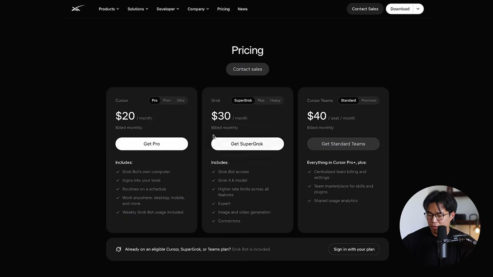
1:05 · Тарифы и лимиты на сайте из видео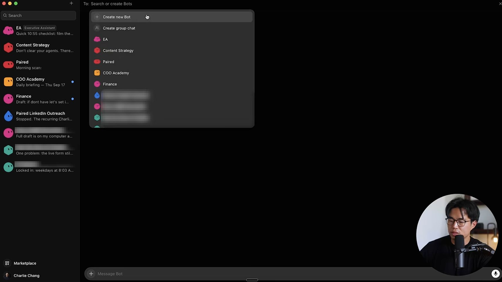
1:45 · Меню создания нового бота 1:55 · Название описание и уведомления бота
1:55 · Название описание и уведомления бота 2:15 · Настройка обязанностей исполнительного ассистента
2:15 · Настройка обязанностей исполнительного ассистента 2:45 · Настройки использования и оплаты
2:45 · Настройки использования и оплаты 2:55 · Обновление приложения и компьютера
2:55 · Обновление приложения и компьютера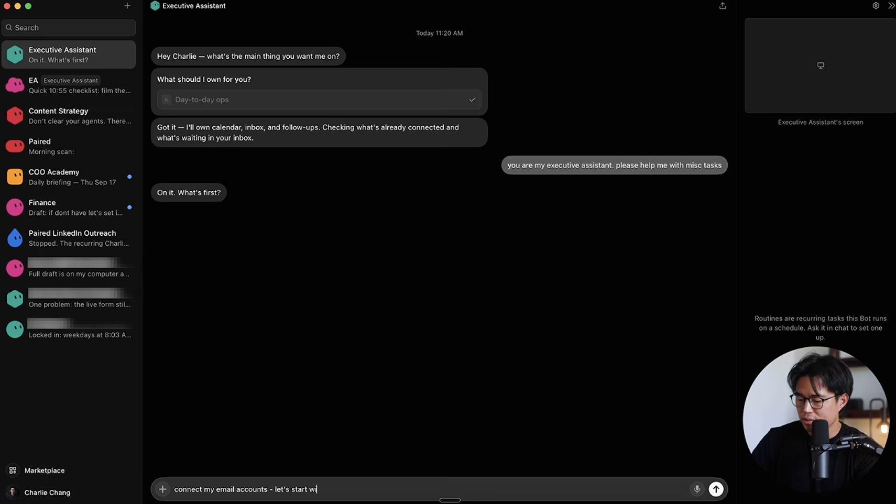
3:15 · Запрос подключения Gmail в чате 3:35 · Добавление второго Gmail с меткой work
3:35 · Добавление второго Gmail с меткой work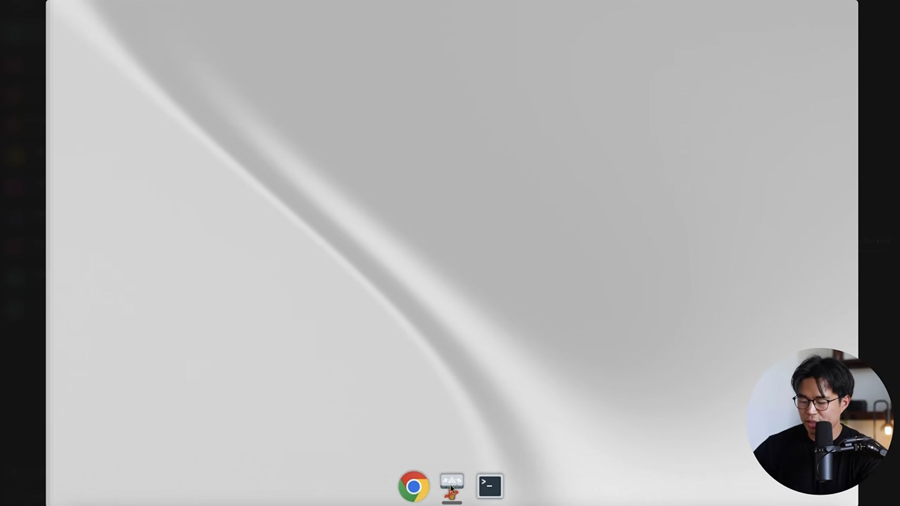
4:35 · Рабочий стол Linux после запуска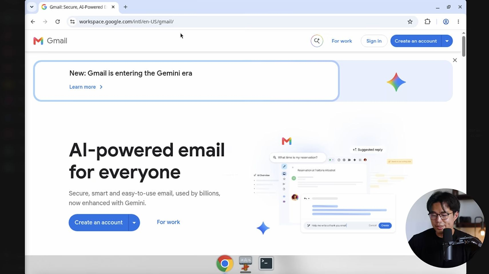
5:05 · Chrome и страница входа Gmail на компьютере бота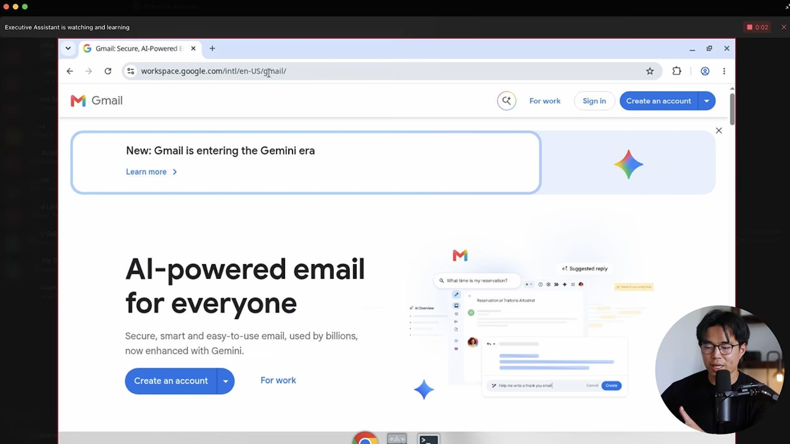
5:20 · Запись обучения через Teach a task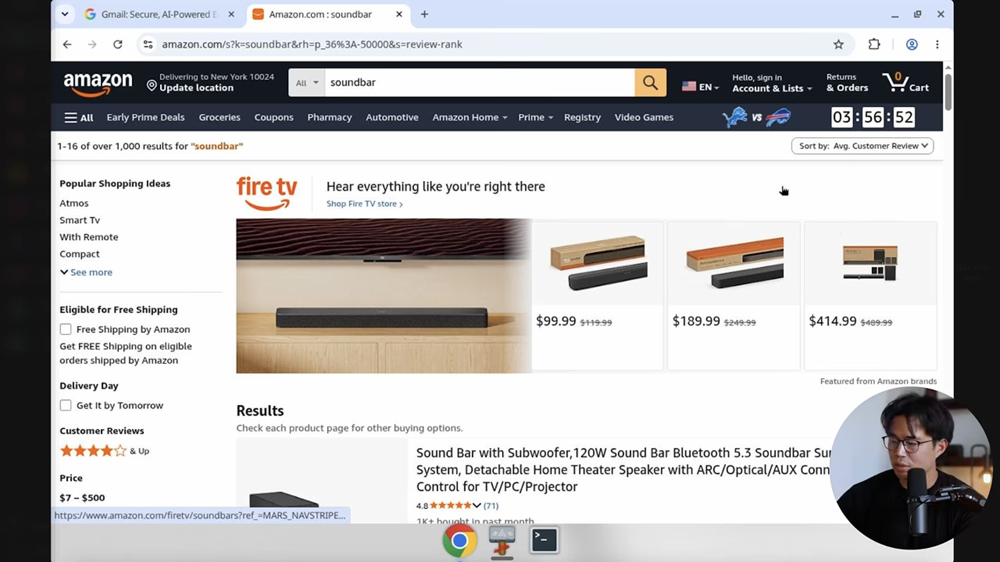
5:55 · Выдача Amazon с ограничением цены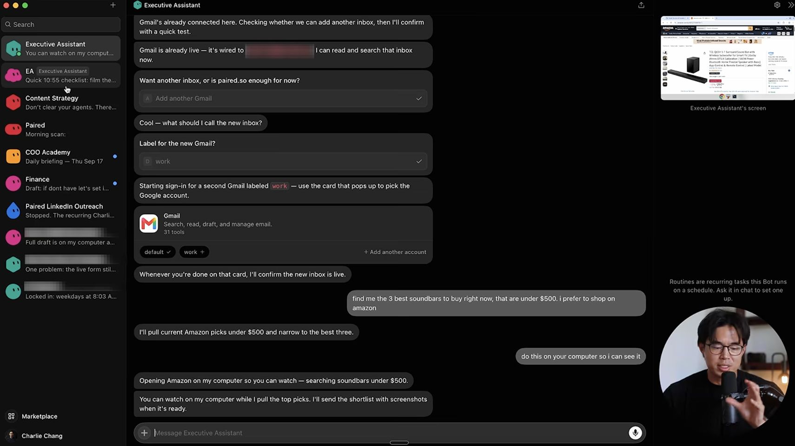
6:20 · Список ботов и параллельная работа с задачами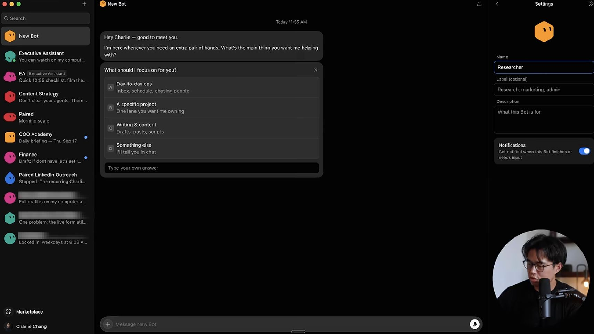
6:35 · Переименование и выбор роли исследователя 7:25 · Список регулярных задач ассистента
7:25 · Список регулярных задач ассистента 7:55 · Ежедневный отчёт по Slack и почте
7:55 · Ежедневный отчёт по Slack и почте 9:10 · Три подобранных саундбара со ссылками
9:10 · Три подобранных саундбара со ссылками 9:45 · Каталог готовых ботов и плагинов
9:45 · Каталог готовых ботов и плагинов 10:00 · Карточка dr eggbot и кнопка Import Bot
10:00 · Карточка dr eggbot и кнопка Import Bot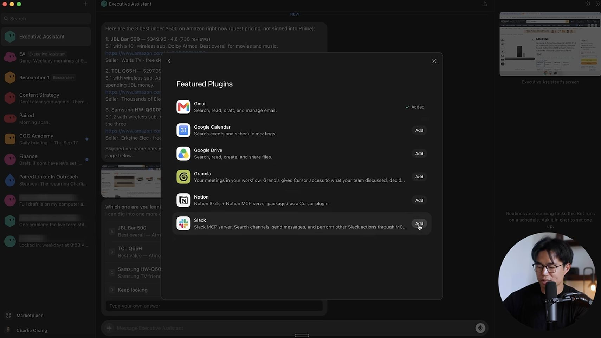
10:15 · Подключение Gmail Drive Calendar Slack и Notion 10:25 · Подключение 1Password и менеджеров паролей
10:25 · Подключение 1Password и менеджеров паролей 10:50 · Добавление ассистента Finance и COO в группу
10:50 · Добавление ассистента Finance и COO в группу 11:20 · Общая задача по неоплаченным счетам
11:20 · Общая задача по неоплаченным счетам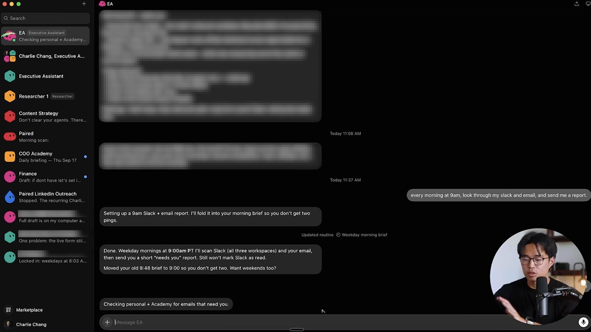
11:55 · Проверка почты и обновление утреннего расписания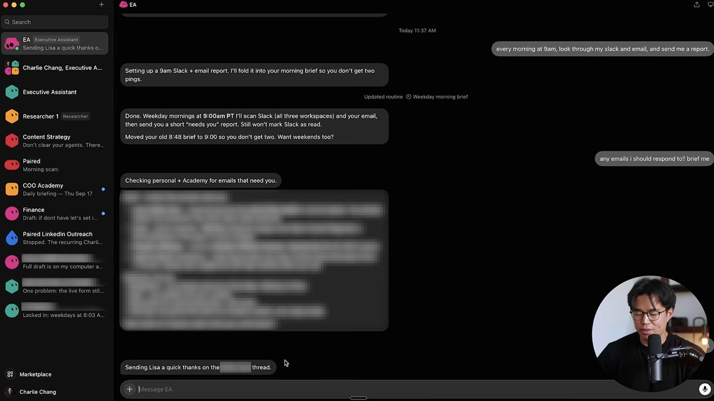
12:10 · Начало отправки ответа на письмо 12:15 · Подтверждение отправки письма
12:15 · Подтверждение отправки письма